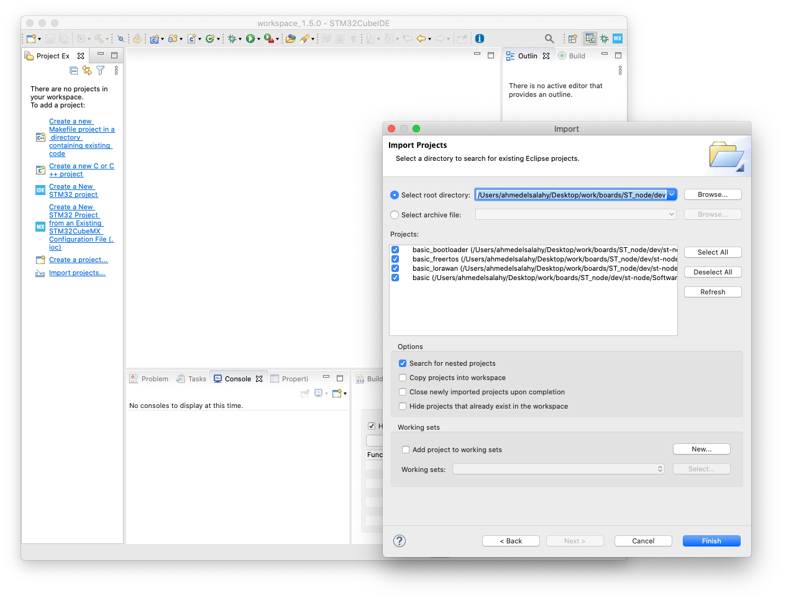

Setup the environment and build an application using ST STM32CubeIDE.
Prerequisites
Note:
STM32CubedIDE 1.5.0 runs with JRE 1.8.0_271.Setup
- Clone the project & checkout
developbranch:
$ git clone --branch develop --recurse-submodules \
https://github.com/TheThingsIndustries/generic-node-se.git
- Launch STM32CubeIDE, choose your workspace location and press Launch.
- Choose File → Import.
- Select Existing Projects into Workspace and click Next >.
-
Choose Browse…, navigate to the cloned project folder and click Finish.
 -
You should now be able to see all the imported projects in the Project Explorer on the left.
Build Example
To build any of the imported projects, right-click on it and select Build Project.
Note:
If you build thebasic app, you will find your newly built application in the generic-node-se/Software/app/basic/Debug/ folder.